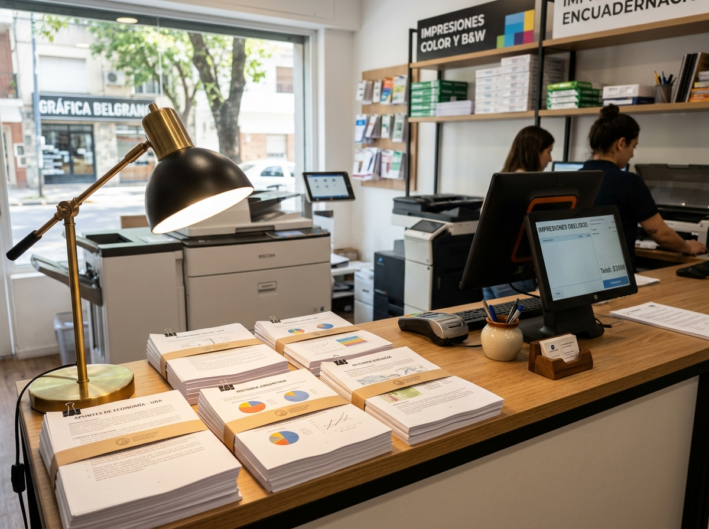

A4 & Oficio · Color y B&N01 · IMPRESIONES & FOTOCOPIAS
Impresión de apuntes y documentos
Copiado nítido y de alta definición para estudiantes de la UNNE, UTN, profesorados y colegios. Traé tu archivo en pendrive o mandalo previamente por WhatsApp.
- ✓ Impresión blanco y negro y color nítido
- ✓ Doble faz económica para apuntes extensos
- ✓ Papel obra blanco de 75g y 80g de alta calidad
- ✓ Formatos estándar A4, Legal y Oficio